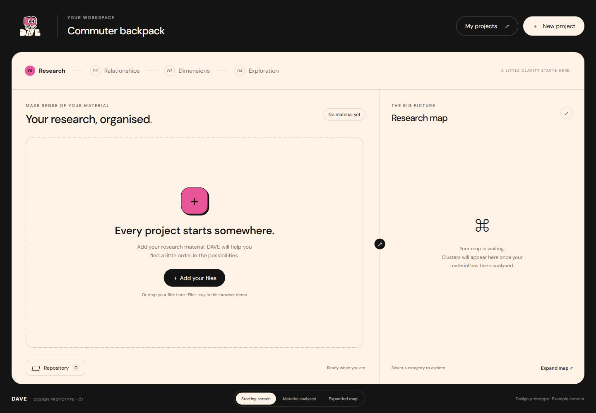
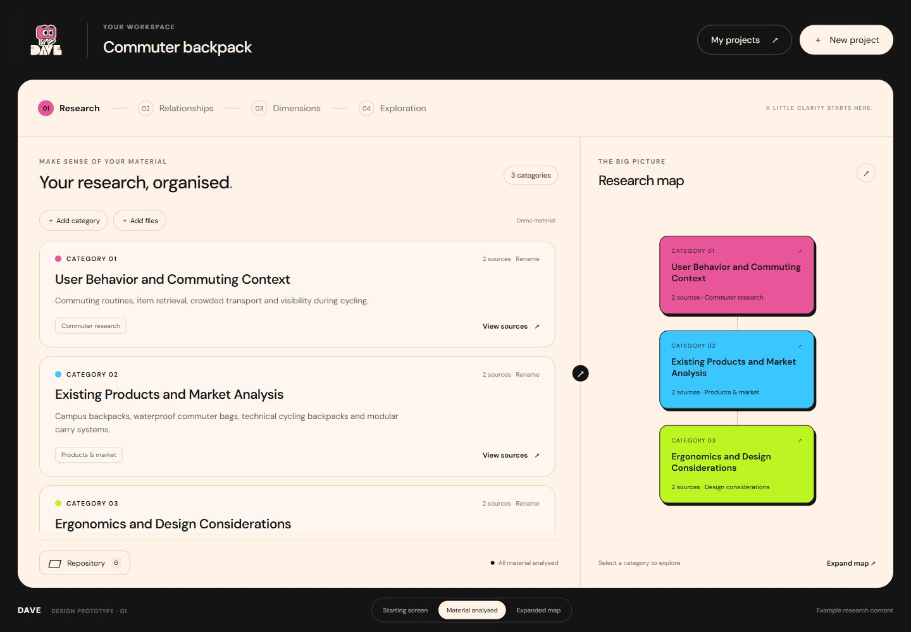
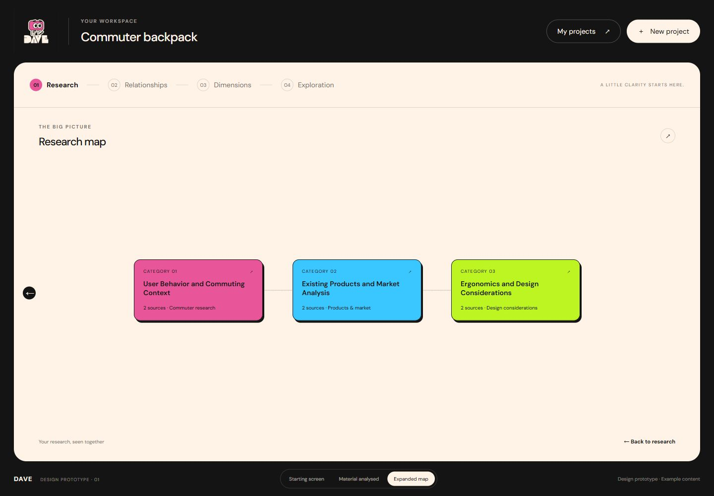
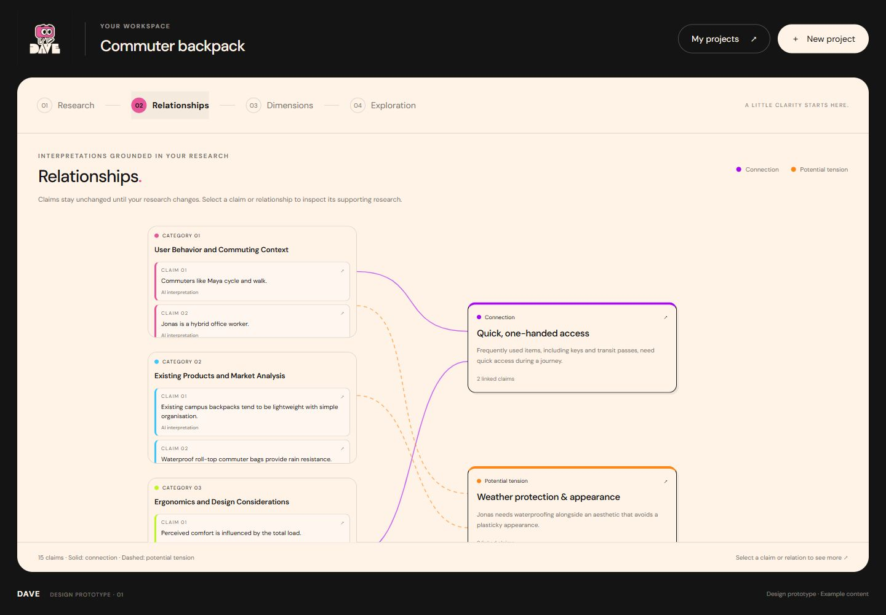
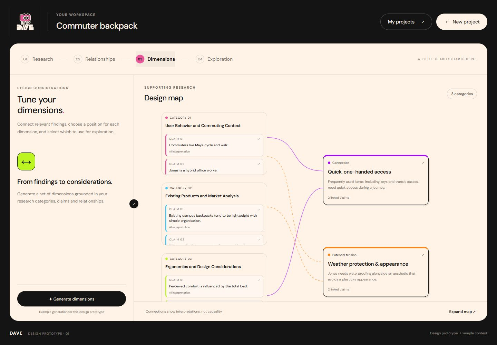
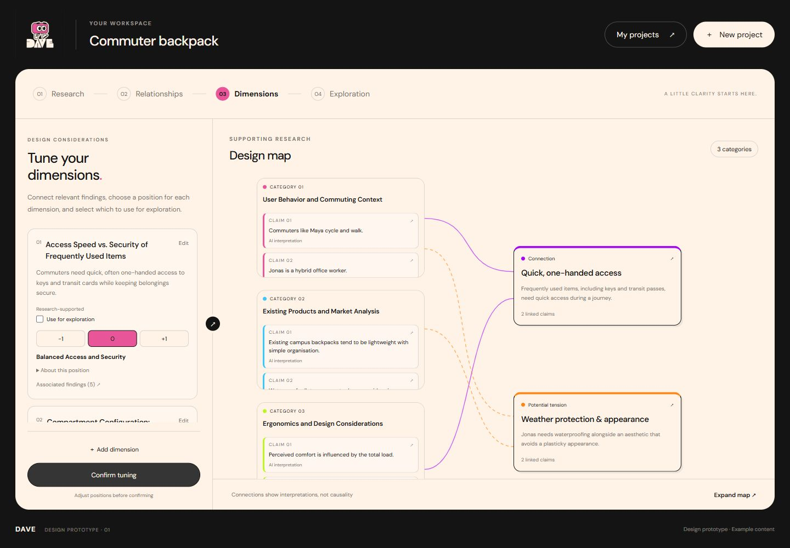
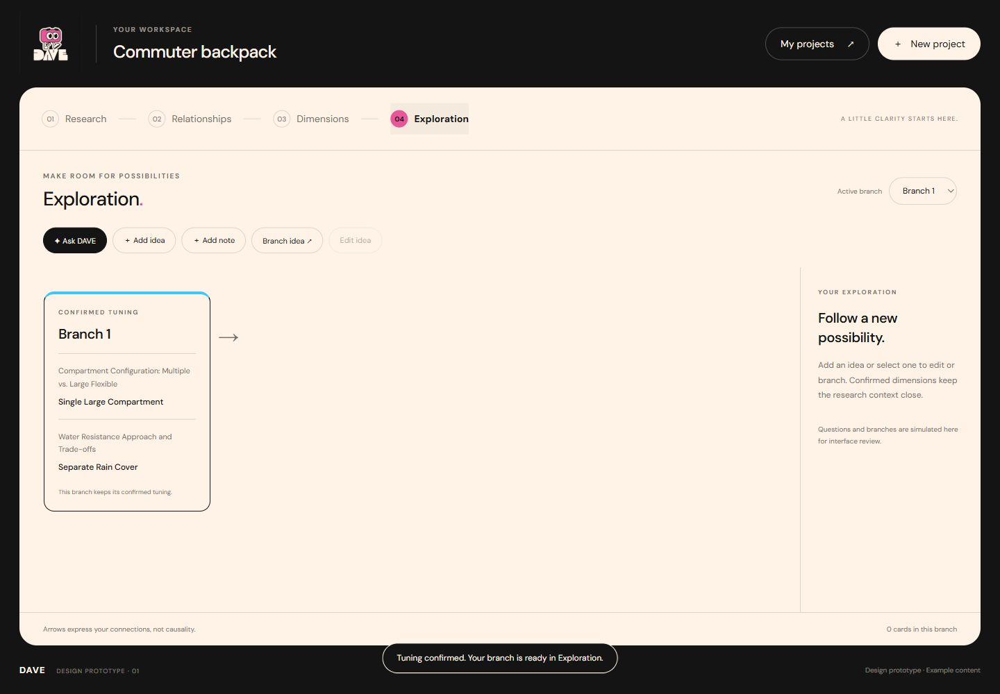
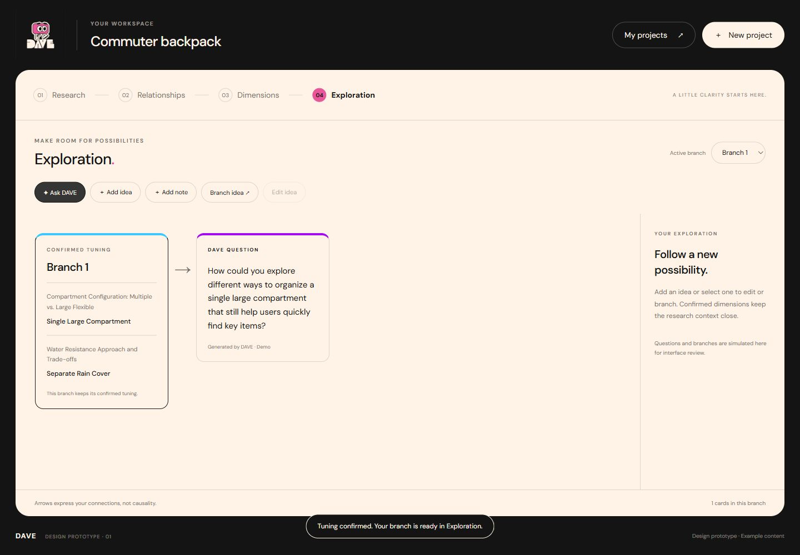
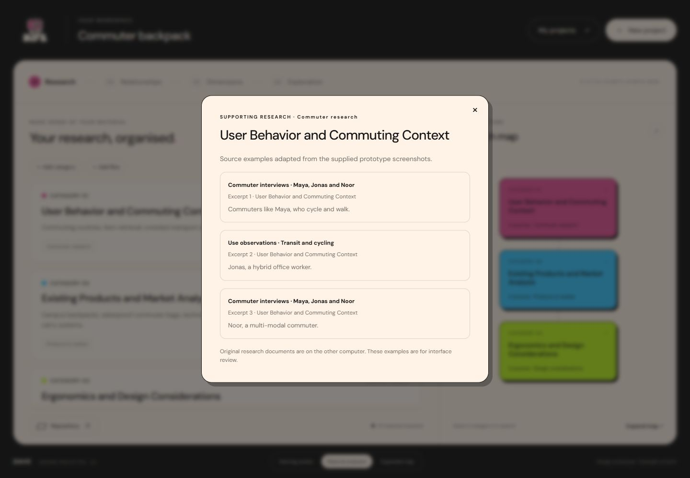

Approved appearance reference. The existing working application remains authoritative for all logic, data, AI and behaviour. These snapshots contain no application JavaScript.
Start hereImplementation promptVisual specifications








